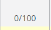

The purpose of the WODs are to help improve and teach students how to solve problems while under a time constraint. What I learned from preparing for the WOD was that because it is timed, I may tend to try and finish reading the prompt fast in order to have more time to solve the problem and type everything out. After performing the WOD, I realized the major disadvantage of speed reading through the prompt. This was evident as I received a 0/100 for my first WOD because of a minor mistake, which in a real life situation could possibly cost me my job.
There are many things that I can do to improve my performance for the next WOD. Those things would include practicing previous WODs, making sure to read through the entire prompt carefully, and to always double check my answer even if I might get a bad time. Practicing previous WODs would definitely help because it’ll help me get more used to JavaScript and being under a time constraint. Although I may already know the answer to some of the WODs because I’ve done them before, it’s still fine to practice them again once in a while. As for reading the prompt, this is a major thing that I could do to improve my performance for the next WOD because it was entirely because I didn’t properly read the prompt that I received a DNF on my first WOD. Double checking answers would also be greatly beneficial for improving my performance since if I double checked my solution, it would probably reduce the possibility of having a mistake. Despite the fact that I may receive a poorer time than if I hadn’t double checked it, a not so good time is still better than a DNF.
This experience has definitely been extremely valuable as it showed me what I needed to improve on and what my weaknesses are. Although I may have gotten a poor grade on it, I think it would definitely help and push me to try harder next time which would hopefully allow me to improve the next time I do the WOD.
For my first WOD, I chose to implement the function by having a for loop inside the function that loops from 0 to 100 using the condition num =0 and num<101. I then used if and else if statements to check if it should print BertErnie, Bert, or Ernie. The reason why I used if else statements was because it was just easier for me to use and easier to visually see what I wanted. There are definitely ways I could’ve better implemented this function. For example, I could’ve had a for loop on the outside of the function to loop through the correct range of 1-100 instead of having it inside of the function. Additionally, I could’ve used num <= 100 rather than num < 101. Overall there are indeed some things that I could’ve fixed but the code in general runs fine as long as num = 0 is changed to num = 1.
I believe that it is quite important and valuable to discuss the WOD after it’s completed because of the fact that some people might’ve not understood some parts or there could’ve been a better way to implement a function. Having a discussion after the WOD will allow people to easily understand what could’ve been improved in their own code, this is especially true since discussing right after completing the WOD would ensure that everything is still fresh in a person’s mind. I personally believe that discussing the WOD after its completion can definitely improve people’s understanding of the problem and to learn what to do to improve on future WODs.